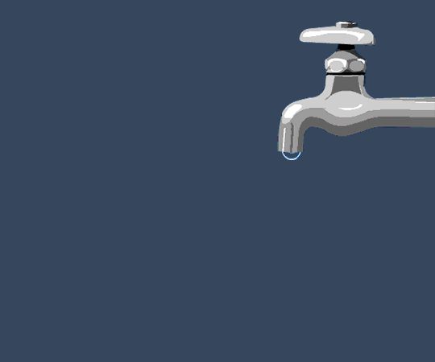
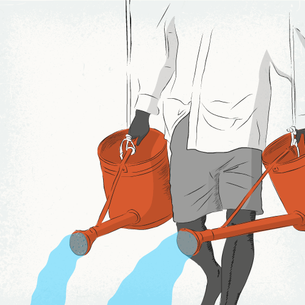

Apa - sursa vieții
Din punct de vedere chimic, apa (H2O) este un oxid de hidrogen. În constituţia unei molecule de apă intră doi atomi de hidrogen şi un atom de oxigen, uniţi prin legături covalente. Timp de secole, apa a fost considerată un element chimic de sine stătător.
O SCURTĂ ISTORIE A APEI DIN IAȘI
ÎNCEPUTURILE
|
1408 |
Atestare documentară a Iaşiului printr-un document emis la Curtea lui Alexandru cel Bun. La acea dată alimentarea cu apă se realiza din izvoare neamenajate sau din uluce, budăi, şi fântâni. |
|
1654 |
Existau la Iaşi captări de ape subterane şi o baie publică, prima de acest fel din ţară. |
|
1729 |
„Iaşul duce mare lipsă de apă de băut [...], s-a hotărât să înlăture şi acest neajuns al lipsei de apă. Cu multe cheltuieli au adus apă limpede şi bună de băut şi a zidit şi trei fântâni în faţa curţii […]” Cronica Ghiculeştilor. |
Sacagiu
fotografie de epocă preluată din "Lungul drum al apei către Iaşi" de N. Peiu şi D. Simionescu , ed. Gama, Iaşi, 1999
Aparul
N. Peiu şi D. Simionescu, "Lungul drum al apei către Iaşi", ed. Gama, Iaşi, 1999
|
1774-1777 |
Prinţul Grigore Alexandru Ghica realizează o serie de fântâni publice şi măreşte debitele vechilor izvoare. |
|
1853 |
Se înfiinţează Ministerul Trebilor din Nlăuntru, apoi Ministerul Lucrărilor Publice. |
|
1865-1872 |
Serviciul Apelor trece de la Ministerul Lucrărilor Publice în subordinea Primăriei şi se fac primele încercări de alimentare cu apă a oraşului din surse mai îndepărtate. |
|
1878-1884 |
În paralel cu extinderea lucrărilor de alimentare cu apă se realizează și primele lucrări de canalizare. |
|
1898-1911 |
Inginerul W. H. Lindley realizează studii hidrogeologice şi propune alimentarea cu apă a oraşului Iaşi din dreptul comunei Timişeşti, la confluenta Văii Nemţişorului cu Valea Moldovei, având ca sursă râul Ozana. Captarea constă într-un dren cu adâncimea de cca. 14 m, de unde apa ajunge gravitaţional printr-o conductă alcătuită aproape în totalitate din fontă, a doua din Europa la acea vreme, ca debit şi ca lungime, asigurându-se în medie 10.000-30.000 m3 apă / zi. Această lucrare constituie începutul modernizării sistemului de alimentare cu apa a municipiului Iaşi (mai 1911). |

PROPRIETĂȚILE FIZICE ALE APEI
ANOMALII DE FAZĂ
- Apa are un punct de topire anormal de mare.
- Punctul de fierbere a apei are o valoare anormal de mare
- Apa solidă există într-o varietate de structuri cristaline şi metastabile
- Apa lichidă poate fi supraîncălzită uşor.
- Vibraţiile apei calde sunt mai lungi decât cele ale apei reci.
ANOMALII DE DENSITATE
- Densitatea gheţii creşte prin încălzire (până la 70K)
- La topire,volumul apei scade.
- Presiunea reduce punctul de topire a gheţii.
- La suprafaţă apa este mai densă decât în adâncime.
- Presiunea reduce temperatura la care densitatea este maximă.
ANOMALII DE MATERIAL
- Nici o soluţie apoasă nu este ideală.
- Substanţele dizolvate afectează diferit densitatea şi vâscozitatea apei.
- Conductibilitatea electrică a apei creşte şi atinge un maxim de
aproximativ 230 °C.
- La presiune înaltă, respingerea dintre moleculele de apă în mişcare
este amplificată prin creşterea presiunii.
ANOMALII TERMODINAMICE
- Căldura de topire variază cu temperatura şi prezintă un maxim de
aproximativ 170 °C.
- Apa are o capacitate calorică specifică de două ori mai mare decât cea a
gheţii sau a aburului.
PROPRIETĂȚILE DE SOLVENT ALE APEI
Apa este adesea considerată solvent universal, deoarece este capabilă să dizolve o gama extrem de variată de compuși, de la zaharuri la săruri, de la ADN la hidrogen. Substanțele care se dizolvă în apă se numesc hidrofile; combinațiile care nu se dizolvă în apă sunt denumite hidrofobe. În condițiile în care majoritatea reacțiilor biochimice au loc în mediul apos din fiecare celulă unde sunt dizolvăți participanții la reacții, proprietățile de solvent ale apei sunt vitale pentru toate organismele vii. Pe de altă parte, abilitatea dizolvantă a apei este cauza pentru care poluarea apei este atât de persuaziva. Această afirmație este justificată prin faptul că în apă se poate dizolvă aproape orice substanță, fie ea din categoria pesticidelor, erbicidelor, a deșeurilor industriale, produselor secundare etc., sau a altor compusilor potențial periculoși.
COMPOZIȚIA CHIMICĂ A APEI
PROPRIETĂȚILE ACIDO – BAZICE ALE APEI
Moleculele de apă au un caracter dual, astfel incât în echilibrele acido-bazice pot funcționa:
» ca generator de protoni: H2O ⇆ H+
+ OH- (acid)
» ca și acceptori de protoni H2O + H+ ⇆ H3O+
Pentru o exprimare mai comodă a concentrației în ioni de hidrogen sau de hidroxil, Sørensen a introdus,
în anul 1909, in terminologia chimică, noțiunea de pH sau exponent de hidrogen. pH-ul se definește ca
logaritmul
zecimal cu semn negativ al concentrației ionilor de hidrogen:
pH = - lg[H+]
pH -ul apei este un factor extrem de important, care dictează capacitatea de reactivitate a apei, agresivitatea acesteia si capacitatea apei de a se constitui în medii pentru dezvoltarea diferitelor organisme acvatice.
POLUAREA, TRATAREA SI EPURAREA APEI
Poluarea apei reprezintă orice modificare a compoziţiei sau calităţii ei, astfel încât aceasta să
devină
mai
puţin adecvată tuturor, sau anumitor, utilizări ale sale.
Protecţia calităţii apei constituie păstrarea, respectiv îmbunătăţirea caracteristicilor fizico-chimice şi
biologice ale apelor pentru gospodărirea cât mai eficientă a acestora.
Deoarece poluanţii solizi, lichizi sau gazoşi ajung în apele naturale direct, dar mai ales prin
intermediul
apelor uzate, sursele de poluare a apei sunt multiple.
Clasificarea surselor de poluare a apei se face după :
1. Acţiunea poluanţilor în timp. După acest criteriu distingem următoarele surse:
a) continue (canalizarea unui oraş, canalizările instalaţiilor industriale);
b) discontinue temporare sau temporar mobile (canalizări ale unor instalaţii şi obiective care
funcţionează
sezonier, nave, locuinţe, autovehicule, colonii sezoniere etc.) ;
c) accidentale (avarierea instalaţiilor,rezervoarelor,conductelor).
2. Provenienţa poluanţilor. Acest criteriu împarte sursele de poluare a apei în:
a) sursele de poluare organizate:
• surse de poluare cu ape reziduale menajere;
• surse de poluare cu ape reziduale industriale.
b) sursele de poluare neorganizate:
• apele meteorice;
• centrele populate amplasate în apropierea cursurilor de apă.
EFECTE NEGATIVE ASUPRA OMULUI
Majoritatea bolilor din organism sunt cauzate de faptul că oamenii nu beau suficientă apă sau apa baută
nu are
cele mai bune calităţi.
Metalele grele sunt cunoscute ca fiind foarte puţin mobile, ceea ce înseamnă, cu alte cuvinte, că odată ajunse
într-un ecosistem se elimină extrem de greu din acesta.
» Plumbul este toxic pentru organismul uman,unde ajunge pe cale digestivă şi respiratorie,fiind reţinut
în
cortexul renal,în ficat şi în oase.Provoacă saturnismul(oboseală mare, slăbiciune, vărsături, cefalee,
tulburări
nervoase şi renale, nefropatie cronică etc.).
» Mercurul se concentrează în special în cereale sub formă de metilmercur(insecticid) ,dar poate să se
găsească şi
în apa contaminată, în alimente,în săruri şi în aer. Ingerarea de compuşi organici (tip HgCl2) are ca efecte
imediate arsuri în gură şi faringe, colici, vărsături, diaree, anxietate, dupa care se instalează insuficienţă
renală.
» Zincul este un poluant frecvent al apelor şi sedimentelor,fiind un component important al apelor
uzate.Întreprinderile care se ocupă cu producerea de materiale conţinând zinc, se constituie în posibili
poluanţi. Peste pragul toxic, zincul alterează gustul apei . Valorile nu depăşesc concentraţiile admise.
» Cuprul în concentraţii prea ridicate în apă e toxic. A făcut victime în Germania.El nu
se
bioacumulează în organismul uman. Poate proveni din ţevile de cupru, care sunt atacate de apele moi sau
acide.
» Aluminiul consumat în cantităţi mari,prin intermediul apei subterane contaminate, sărurile de aluminiu
pot duce
la o concentrare a aluminiului în ficat, creier (demenţe senile precoce), inimă, oase şi măduva
osoasă.Provoacă
encefalopatii mortale, anemii, astm bronşic şi iritaţii gastrointestinale.
» Fierul este un element cu largă răspândire în natură, concentraţii importante de fier întâlnindu-se în mod
natural în ape de suprafaţă, soluri, sedimente etc. Utilizarea sa pe scară largă în industrie duce la prezenţa
sa frecventă ca component al apelor uzate.
» Cianurile de sodiu şi potasiu. Ionul cianic legat de anumiţi ioni metalici reprezintă o otravă
puternică
ce acţionează prin blocarea respiraţiei celulare.